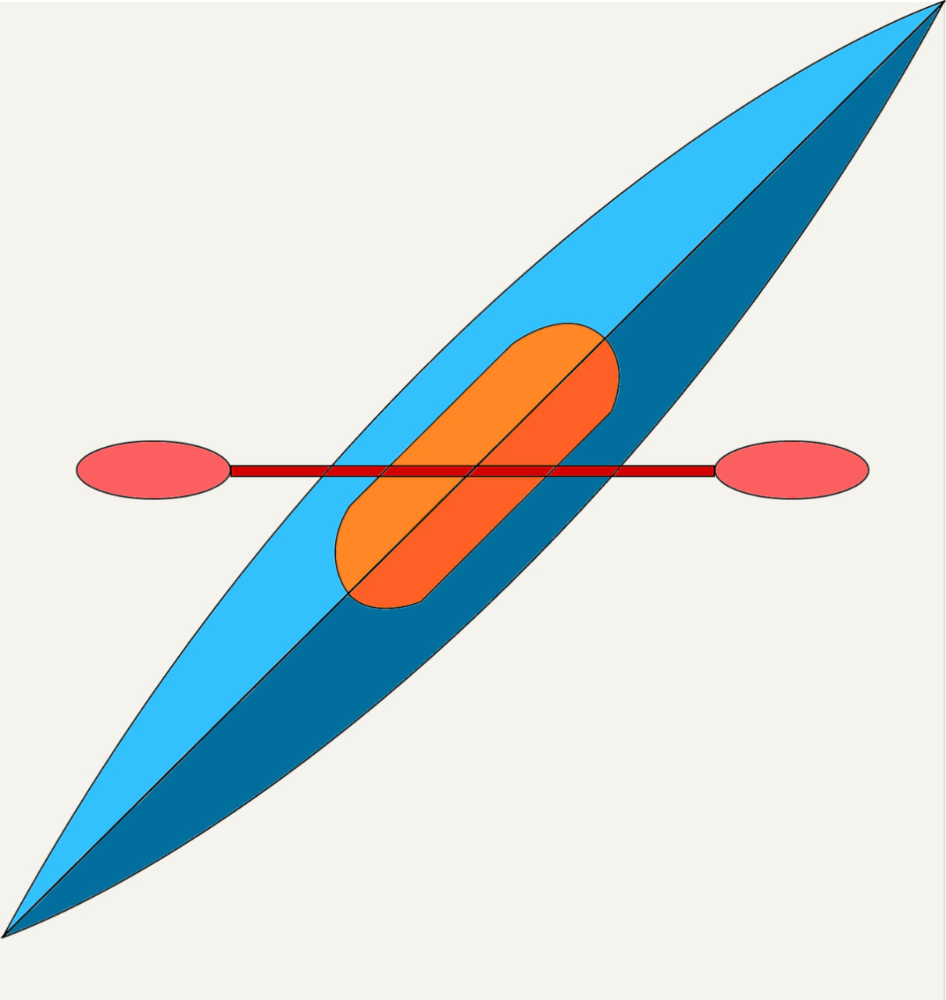

Каное (Canoe)
Каное - відкрите судно симетричної форми з піднятими носом та кормою. Веслування здійснюється однолопатевим веслом з одного борту.

Каное - відкрите судно симетричної форми з піднятими носом та кормою. Веслування здійснюється однолопатевим веслом з одного борту.
